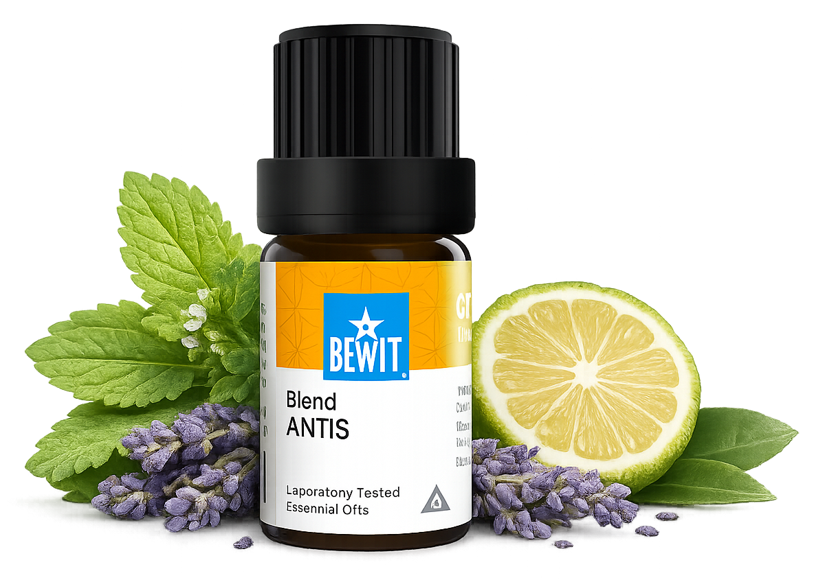

Není potřeba hledat složitosti. Někdy stačí malý krok, který vám pomůže zpomalit a uvolnit napětí. Můžete začít směsí Antis, nebo si vybrat podle toho, co právě cítíte. Výsledky přicházejí s pravidelností — dopřejte si čas.

pro klidnou mysl a uvolnění
Když je toho na vás moc, hlava nejde vypnout a cítíte vnitřní tlak. Ukáži vám jednoduché možnosti, jak se zklidnit a vrátit se zpět k sobě.
Proti stresu

Když jste pod dlouhodobým tlakem, mentálně přetížení a těžko zvládáte stres.
💧 Jak použít: naneste trochu nosného oleje (např. jojobového) na chodidla, přidejte 1 kapku na každé chodidlo a rozetřete. Nebo přidejte 3–5 kapek do difuzéru, případně do koupele se lžící smetany nebo tekutého mýdla.
Uklidnit mysl →💧 Jak použít: naneste trochu nosného oleje na chodidla, přidejte 1 kapku na každé chodidlo a rozetřete. Nebo přidejte 3–5 kapek do difuzéru, případně do koupele se lžící smetany nebo tekutého mýdla.
Chci klid💧 Jak použít: naneste trochu nosného oleje na chodidla, přidejte 1 kapku na každé chodidlo a rozetřete. Nebo přidejte 3–5 kapek do difuzéru, případně do koupele se lžící smetany nebo tekutého mýdla.
Chci lehkost💧 Jak použít: naneste trochu nosného oleje na chodidla, přidejte 1 kapku na každé chodidlo a rozetřete. Nebo přidejte 3–5 kapek do difuzéru.
Chci se ukotvitNení potřeba hledat složitosti. Někdy stačí malý krok, který vám pomůže zpomalit a uvolnit napětí. Můžete začít směsí Antis, nebo si vybrat podle toho, co právě cítíte. Výsledky přicházejí s pravidelností — dopřejte si čas.
Mohlo by vás také zajímat:
🌿 Všechny esence, které na tomto webu doporučuji, jsou od BEWIT. Jako registrovaný zákazník můžete nakupovat se slevou až 50 % na vybrané produkty.
Registrace u BEWIT zdarma →